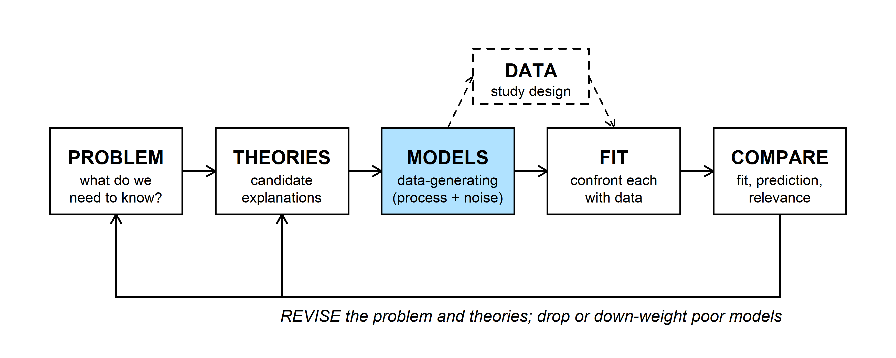
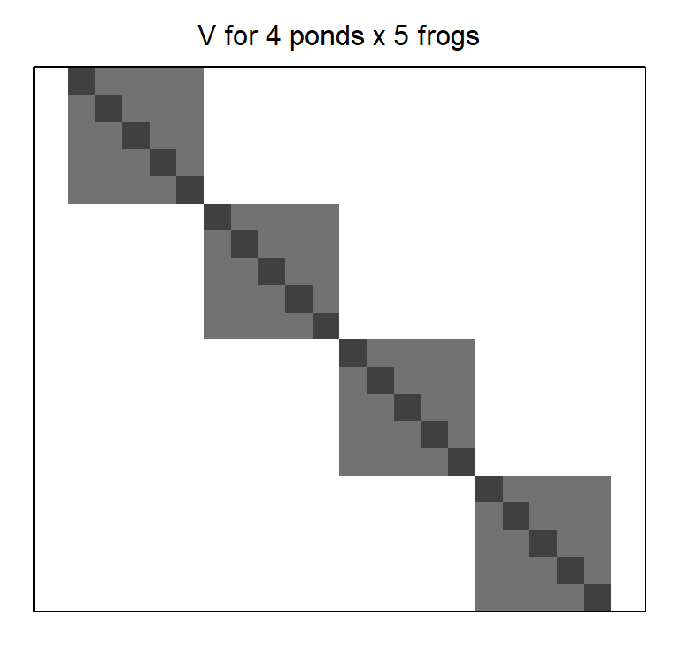
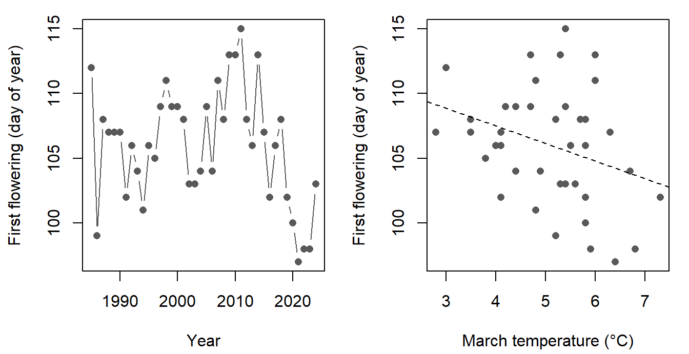
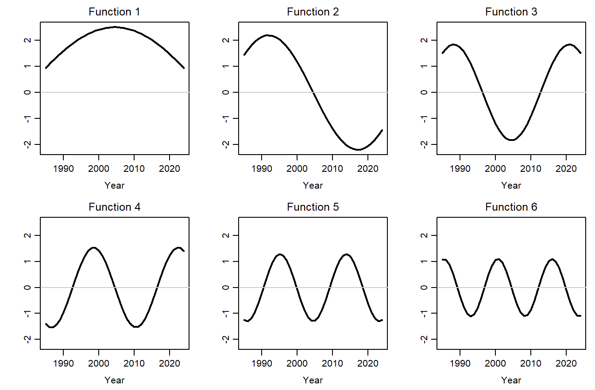
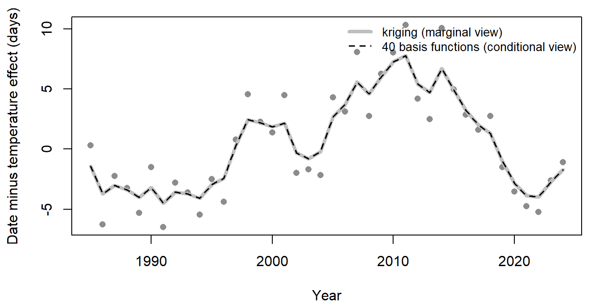

This is a supplemental page: its material may not be covered in class. R code from this page is also in the companion script. Packages: mvtnorm, lme4, nlme, mgcv. Background: the random intercept and its covariance matrix (Week 11), penalized splines (Week 13), and Gaussian processes over a map (Week 14).
When observations close together in time or space are more alike than the covariates explain, a model can say so in two ways. It can let the expected response bend with time or location (a smooth), or it can leave the mean simple and let the errors of nearby observations covary (a structured covariance matrix). This page shows that for normal data the two are often one model written two ways, and then where they stop being the same.

This page is about the MODELS box: how to write down dependence among observations. Two names recur in the literature.1
corExp() in gls(), and the matrix \(V\) from Week 11 work this way.Cressie put the point in one line: one person's covariance structure may be another person's mean structure.2
The common form behind both is a linear model with an extra set of basis functions \(B\) (one column per function, one row per observation) whose weights \(\gamma\) get a normal prior:3
\[ \mathbf{y} = X\boldsymbol\beta + B\boldsymbol\gamma + \boldsymbol\varepsilon, \qquad \boldsymbol\gamma \sim N(\mathbf{0},\ \Sigma_\gamma), \qquad \boldsymbol\varepsilon \sim N(\mathbf{0},\ \sigma_e^2 I). \]
Read it conditionally (hold \(\boldsymbol\gamma\) fixed) and the mean bends while the errors stay independent:
\[ E[\mathbf{y} \mid \boldsymbol\gamma] = X\boldsymbol\beta + B\boldsymbol\gamma, \qquad \text{Var}(\mathbf{y} \mid \boldsymbol\gamma) = \sigma_e^2 I. \]
Read it marginally (average over \(\boldsymbol\gamma\)) and the mean is flat while the errors covary:
\[ E[\mathbf{y}] = X\boldsymbol\beta, \qquad \text{Var}(\mathbf{y}) = V = B\,\Sigma_\gamma B^T + \sigma_e^2 I. \]
The second line follows from the variance of a linear combination: if \(\boldsymbol\gamma\) has covariance \(\Sigma_\gamma\), then \(B\boldsymbol\gamma\) has covariance \(B\Sigma_\gamma B^T\), and the independent noise adds \(\sigma_e^2\) to the diagonal. A sum of normal variables is normal, so the marginal model is \(\mathbf{y} \sim N(X\boldsymbol\beta, V)\) exactly. The same \(\boldsymbol\beta\) maximizes both, and the best guess of the smooth \(B\boldsymbol\gamma\) from the conditional view equals the kriging prediction from the marginal view. The sections below check each claim with numbers.
The smallest case is a random intercept. Here \(B\) is the matrix \(Z\) of group indicators (a 1 in column \(j\) when the observation is from group \(j\)), and \(\Sigma_\gamma = \sigma_a^2 I\). Take log Bd loads from 5 frogs in each of 4 ponds:
set.seed(7)
pond <- factor(rep(LETTERS[1:4], each = 5))
a_true <- rnorm(4, 0, 0.8)
load <- round(3 + a_true[pond] + rnorm(20, 0, 0.5), 1)
tapply(load, pond, mean)## A B C D
## 4.72 2.82 2.56 2.92Marginal view. Each frog's load is the grand mean plus correlated noise; two frogs share a covariance \(\sigma_a^2\) when they come from the same pond and 0 otherwise. Fit by maximizing the multivariate normal likelihood:
library(mvtnorm)
Z <- model.matrix(~ pond - 1)
nll_ri <- function(p) {
V <- exp(2 * p[2]) * Z %*% t(Z) + exp(2 * p[3]) * diag(20) # V = sigma_a^2 Z Z' + sigma_e^2 I
-dmvnorm(load, rep(p[1], 20), V, log = TRUE)
}
fit_ri <- optim(c(3, 0, 0), nll_ri, method = "BFGS")
mu_hat <- fit_ri$par[1]
sig_a <- exp(fit_ri$par[2])
sig_e <- exp(fit_ri$par[3])
c(mu = mu_hat, sigma_a = sig_a, sigma_e = sig_e, logLik = -fit_ri$value)## mu sigma_a sigma_e logLik
## 3.2550003 0.8253632 0.5071983 -20.1138851
Conditional view. Each pond has its own mean, \(\mu + a_j\), and the frogs are independent around it. The prior \(a_j \sim N(0, \sigma_a^2)\) becomes a penalty on the pond effects, so the estimates minimize
\[ \sum_i \bigl(y_i - \mu - a_{j[i]}\bigr)^2 + \lambda \sum_j a_j^2, \qquad \lambda = \sigma_e^2 / \sigma_a^2, \]
which is ridge regression on the pond columns.4 With the variances from the marginal fit:
V_ri <- sig_a^2 * Z %*% t(Z) + sig_e^2 * diag(20)
lambda_ri <- sig_e^2 / sig_a^2
C <- cbind(1, Z)
P <- diag(c(0, rep(lambda_ri, 4))) # no penalty on the intercept
est <- solve(t(C) %*% C + P, t(C) %*% load)
blup <- sig_a^2 * t(Z) %*% solve(V_ri, load - mu_hat) # marginal: G Z' V^-1 (y - X beta)
library(lme4)
m_ri <- lmer(load ~ 1 + (1 | pond), REML = FALSE)
cbind(conditional = est[-1], marginal = drop(blup), lmer = ranef(m_ri)$pond[, 1])## conditional marginal lmer
## pondA 1.3621244 1.3621242 1.3621246
## pondB -0.4044533 -0.4044536 -0.4044534
## pondC -0.6461956 -0.6461958 -0.6461956
## pondD -0.3114756 -0.3114758 -0.3114756The three columns agree to the sixth decimal, and the intercepts match too (3.255 conditional, 3.255 marginal). The conditional view shrinks each pond's mean toward the grand mean by the penalty \(\lambda\) = 0.38; the marginal view gets the same shrinkage from the covariance.5
set.seed(12)
n <- 40
year <- 1985:2024
yr <- year - 1985
temp <- round(4 + 0.06 * yr + rnorm(n, 0, 0.7), 1) # March mean temperature (°C)
D <- abs(outer(yr, yr, "-"))
field <- drop(t(chol(25 * exp(-D / 6))) %*% rnorm(n)) # sigma_s 5, length-scale 6 yr
day <- round(120 - 3 * temp + field + rnorm(n, 0, 2))
phen <- data.frame(year, yr, temp, day)The running example is a 40-year record of first-flowering dates for a desert annual, with the mean March temperature as the covariate. Flowering comes about 3 days earlier per degree in the simulation that made these data, and a slowly wandering component (weather patterns, seed bank dynamics, whatever the covariate misses) makes nearby years alike. March temperatures warm over the record too, so the covariate and the time trend overlap.

Ordinary regression gives a slope of -1.36 days per degree (SE 0.67), well short of the true value of -3. A run of years with late flowering happened to line up with cool springs, and lm() credits temperature for some of what the wandering component did.
A GAM handles the wandering part with a smooth of year. Using the P-spline from Week 13 (20 B-spline basis functions, second-difference penalty) and fitting by maximum likelihood so the likelihoods below are comparable:6
library(mgcv)
g_ml <- gam(day ~ temp + s(yr, bs = "ps", k = 20), data = phen, method = "ML")
c(temp = coef(g_ml)[["temp"]], lambda = g_ml$sp, edf = sum(g_ml$edf[-(1:2)]))## temp lambda.s(yr) edf
## -3.214443 42.443463 5.514259The second-difference penalty doesn't touch straight lines (a line has zero second differences), so the smooth splits into two parts:
mgcv will do the change of basis for us:7
sm <- smoothCon(s(yr, bs = "ps", k = 20), data = phen, absorb.cons = TRUE)[[1]]
re <- smooth2random(sm, names(phen), type = 2)
Xf <- re$Xf # unpenalized part
Xr <- re$rand[[1]] # penalized part: coefficients iid N(0, sigma_b^2)
c(ncol(Xf), ncol(Xr))## [1] 1 18That is 1 unpenalized column (the linear trend; the intercept went into the model's own intercept) and 18 penalized ones. Now fit the marginal model with the penalized part moved into the covariance, \(V = \sigma_b^2 X_r X_r^T + \sigma_e^2 I\), and the unpenalized part kept in the mean. For given variances the best \(\boldsymbol\beta\) is the GLS estimate, so the search is over the two SDs only:
X_gam <- cbind(1, phen$temp, Xf)
nll_gam <- function(q) {
V <- exp(2 * q[1]) * Xr %*% t(Xr) + exp(2 * q[2]) * diag(n)
b <- solve(t(X_gam) %*% solve(V, X_gam), t(X_gam) %*% solve(V, phen$day))
-dmvnorm(phen$day, drop(X_gam %*% b), V, log = TRUE)
}
fit_gm <- optim(c(0, log(2)), nll_gam, method = "BFGS")
sd_gm <- exp(fit_gm$par) # sigma_b, sigma_e
V_gm <- sd_gm[1]^2 * Xr %*% t(Xr) + sd_gm[2]^2 * diag(n)
b_gm <- solve(t(X_gam) %*% solve(V_gm, X_gam), t(X_gam) %*% solve(V_gm, phen$day))
c(temp = b_gm[2], lambda = sd_gm[2]^2 / sd_gm[1]^2)## temp lambda
## -3.214439 42.439831The marginal model's \(\sigma_e^2/\sigma_b^2\) is 42.44, the GAM's smoothing parameter is 42.44, and both give a temperature slope of -3.21. The smoothing parameter of a GAM is a ratio of two variances, and choosing it by ML or REML is the same job as estimating a variance component in a mixed model.8
The equivalence runs the other way too. Any lme(), lmer(), or glmmTMB() fit with random effects \(\mathbf{u} \sim N(0, \sigma^2 I)\) is a penalized regression with penalty \(\lambda \mathbf{u}^T\mathbf{u}\), which is why mgcv can fit random intercepts as smooths (s(pond, bs = "re")).
Question: The P-spline penalty leaves straight lines alone. If you used a first-difference penalty instead, which functions would be unpenalized, and which part of the smooth would move between the mean and the covariance?
Now start from the other end. The marginal model uses an exponential covariance over years (the continuous-time version of AR(1)), exactly as on the Week 14 page but in one dimension:
\[ V_{st} = \sigma_s^2 \exp\!\left(-\frac{|t_s - t_t|}{\ell}\right) + \sigma_e^2\,\mathbb{1}[s = t]. \]
X <- cbind(1, phen$temp)
nll_exp <- function(p) {
V <- exp(2 * p[3]) * exp(-D / exp(p[4])) + exp(2 * p[5]) * diag(n)
-dmvnorm(phen$day, drop(X %*% p[1:2]), V, log = TRUE)
}
fit_exp <- optim(c(coef(m_lm), log(4), log(5), log(2)), nll_exp,
method = "BFGS", hessian = TRUE)
pe <- fit_exp$par
sig_s <- exp(pe[3]); ell <- exp(pe[4]); sig_e2 <- exp(pe[5])
se_exp <- sqrt(diag(solve(fit_exp$hessian)))
c(temp = pe[[2]], SE = se_exp[[2]], sigma_s = sig_s, ell = ell, sigma_e = sig_e2,
logLik = -fit_exp$value)## temp SE sigma_s ell sigma_e logLik
## -2.9230842 0.7328412 3.8634788 6.0831916 2.0330558 -103.2984962The temperature slope is -2.92 (SE 0.73), close to the truth, with \(\hat\ell\) = 6.1 years.9
Where is the smooth? Any covariance matrix can be factored into basis functions. The eigendecomposition \(K = U\Lambda U^T\) of the field's covariance matrix \(K = \sigma_s^2\exp(-D/\ell)\) gives
\[ K = (U\Lambda^{1/2})(U\Lambda^{1/2})^T = B B^T, \qquad B = U\Lambda^{1/2}, \]
so the field is \(B\boldsymbol\gamma\) with \(\boldsymbol\gamma \sim N(\mathbf{0}, I)\): 40 basis functions over the years, with independent standard normal weights.10 Here are the first six columns of \(B\):
K <- sig_s^2 * exp(-D / ell)
eg <- eigen(K, symmetric = TRUE)
B <- eg$vectors %*% diag(sqrt(eg$values))
share <- cumsum(eg$values) / sum(eg$values)
They look like the basis functions of a spline, wiggling faster as the index rises, and the first ones carry most of the variance: 5 of them hold 74% of the field's variance and 10 hold 87%. Fit the conditional model with these columns, penalizing their weights by the \(N(0, 1)\) prior:
C <- cbind(X, B)
P <- diag(c(0, 0, rep(sig_e2^2, n))) # penalty sigma_e^2 * gamma'gamma
est_c <- solve(t(C) %*% C + P, t(C) %*% phen$day)
V_exp <- K + sig_e2^2 * diag(n)
b_gls <- solve(t(X) %*% solve(V_exp, X), t(X) %*% solve(V_exp, phen$day))
krig <- K %*% solve(V_exp, phen$day - X %*% b_gls) # kriging prediction of the field
c(temp_conditional = est_c[2], temp_marginal = b_gls[2],
max_curve_difference = max(abs(B %*% est_c[-(1:2)] - krig)))## temp_conditional temp_marginal max_curve_difference
## -2.923239e+00 -2.923239e+00 3.008260e-12
The slope and the fitted curve are the same to rounding error. The covariance model fit by gls() has a smooth inside it, built from the eigenvectors of its own covariance matrix.
Keeping only the first \(k\) columns gives a low-rank version: the covariance becomes \(B_kB_k^T + \sigma_e^2 I\), which is cheaper to work with and loses little when the eigenvalues fall off fast.
low_rank <- t(sapply(c(3, 5, 10, 20, 40), function(k) {
Bk <- B[, seq_len(k), drop = FALSE]
Vk <- Bk %*% t(Bk) + sig_e2^2 * diag(n)
bk <- solve(t(X) %*% solve(Vk, X), t(X) %*% solve(Vk, phen$day))
c(k = k, variance_share = share[k], temp = bk[2],
logLik = dmvnorm(phen$day, drop(X %*% bk), Vk, log = TRUE))
}))
round(low_rank, 3)## k variance_share temp logLik
## [1,] 3 0.591 -3.885 -117.358
## [2,] 5 0.736 -3.154 -107.017
## [3,] 10 0.871 -2.826 -104.304
## [4,] 20 0.947 -3.009 -103.801
## [5,] 40 1.000 -2.923 -103.298Thin plate regression splines in mgcv, Hilbert space approximate GPs in brms, and the SPDE meshes of Week 14 are all ways of choosing a small \(B\) whose \(BB^T\) is close to a target covariance.11
The widget below fits the flowering residuals (dates minus the temperature effect, with \(\boldsymbol\beta\) held at the exponential model's estimate) from both sides at once. The left panel is the conditional view: the posterior mean of the field and the weighted basis functions it is built from. The right panel is the marginal view: the covariance matrix those same functions imply, and one row of it against the exact kernel.
Left: grey points are flowering dates minus the temperature effect; thin lines are the kept basis functions times their fitted weights, and the thick line is their sum (the smooth). The dashed line is the full 40-function smooth. Right: the covariance matrix of the field that the kept functions imply (darker = larger), and its row for 2004 (solid) against the exact kernel (dashed).
Question: Click "Fitted settings" for each kernel and set the number of basis functions to 10. Which kernel keeps more of the field's variance, and what about the shape of its covariance curve explains it? What happens to both kernels when you shorten \(\ell\)?
The equivalence above holds when the response is normal and the weights on the basis functions have a normal prior. Three common situations break one of those conditions, or make two models that look equivalent differ in a way that is easy to miss.
The GAM in section 3 and the exponential model in section 4 gave temperature slopes of -3.21 and -2.92. Both handle the wandering component, so why do they differ? The GAM's smooth carries an unpenalized linear trend in year, a fixed effect with no prior. The covariance twin of s(yr) is "a linear trend in the mean plus a covariance," while the exponential model has no trend. Add one:
X3 <- cbind(1, phen$temp, phen$yr)
nll_exp3 <- function(p) {
V <- exp(2 * p[4]) * exp(-D / exp(p[5])) + exp(2 * p[6]) * diag(n)
-dmvnorm(phen$day, drop(X3 %*% p[1:3]), V, log = TRUE)
}
fit_exp3 <- optim(c(coef(lm(day ~ temp + yr, data = phen)), log(4), log(5), log(2)),
nll_exp3, method = "BFGS", hessian = TRUE)
se_exp3 <- sqrt(diag(solve(fit_exp3$hessian)))
c(temp = fit_exp3$par[[2]], trend = fit_exp3$par[[3]], trend_SE = se_exp3[[3]],
logLik = -fit_exp3$value)## temp trend trend_SE logLik
## -3.04041190 0.07477243 0.13947668 -103.16506959| Model | View | Temperature slope (days/°C) | SE |
|---|---|---|---|
lm(), independent errors |
-1.36 | 0.67 | |
| exponential covariance | second order | -2.92 | 0.73 |
| exponential covariance + linear trend | both | -3.04 | 0.76 |
| P-spline smooth of year (REML) | first order | -3.22 | 0.77 |
| regression spline, 9 df, no penalty | first order (fixed) | -2.98 | 0.77 |
With the trend added, the covariance model's slope moves to -3.04, toward the GAM's. The two exponential fits differ by only 0.13 in log-likelihood, and the trend is 0.07 days per year with an SE of 0.14. These data can't say whether the slow drift belongs in the mean or in the covariance, the same problem as the trend-versus-correlation fan on the Week 12 page. The choice matters for the covariate whenever the covariate shares the drift, as March temperature does here.
Two practical consequences:
fx = TRUE, or bs() columns entered into lm()) is all fixed effects. It removes everything its basis can represent, including any part of the covariate that varies smoothly in time, and estimates the covariate's effect from what is left.12The marginal view relied on a sum of normals being normal. With counts and a log link, the latent field still sits in the mean on the link scale,
\[ y_i \sim \text{Poisson}(\mu_i), \qquad \log\mu_i = \mathbf{x}_i^T\boldsymbol\beta + s_i, \qquad \mathbf{s} \sim N(\mathbf{0}, K), \]
but averaging over \(\mathbf{s}\) no longer gives a known distribution with mean \(\exp(\mathbf{x}_i^T\boldsymbol\beta)\) and a tidy covariance. Even the mean shifts. If \(s_i \sim N(0, \sigma_s^2)\),
\[ E[y_i] = E\bigl[e^{\mathbf{x}_i^T\boldsymbol\beta + s_i}\bigr] = e^{\mathbf{x}_i^T\boldsymbol\beta}\, e^{\sigma_s^2/2}, \]
which is larger than the curve at \(s_i = 0\):
set.seed(746)
s_draw <- rnorm(1e6, 0, 0.8)
c(at_s_zero = exp(log(5)), marginal_simulated = mean(exp(log(5) + s_draw)),
marginal_formula = 5 * exp(0.8^2 / 2))## at_s_zero marginal_simulated marginal_formula
## 5.000000 6.893194 6.885639So for non-normal data the two views answer different questions. The conditional curve describes a typical place or year (the field at zero); the marginal mean describes the average over places or years, and it is 38% higher here. The likelihood also changes character: the marginal likelihood is an integral over the whole field, with no closed form.13 Software therefore fits these models in the first-order form, with the field (or its basis weights) written into the linear predictor, even when the field is specified by a covariance function. A second-order model that sets the marginal mean and a working correlation directly, without a latent field, is a different model; generalized estimating equations (GEEs) are the usual example.
For normal data with a penalty or prior on the smooth, choose by convenience, since the fits are the same. The table lists what differs in practice.
| Smooth in the mean (first order) | Correlated errors (second order) | |
|---|---|---|
| What you report | the fitted curve or surface | how fast correlation decays (\(\ell\), \(\phi\), range) |
| Cost for \(n\) observations | grows with the number of basis functions | dense \(V\): grows as \(n^3\); sparse forms (AR(1), SPDE) far less |
| Trend in the mean | included by default (the null space) | absent unless you add it |
| Non-normal responses | natural: the smooth lives on the link scale | needs a latent field, which is the first-order form |
| Prediction at new places or times | evaluate the basis there | kriging (the same number) |
| Typical R tools | mgcv::gam(), brms s() and gp() |
nlme::gls(), glmmTMB exp() and ar1(), spmodel |
sdmTMB and INLA sit in both columns: they specify the field by a Matérn covariance and fit it as a smooth, through a mesh basis chosen to reproduce that covariance.
Two analysts fit the same 30-year series of nest counts. One uses gam(y ~ rain + s(year), method = "REML") and the other uses gls(y ~ rain, correlation = corAR1(form = ~ year)). The rain slopes are 0.42 and 0.61. Before deciding that one analysis is wrong, what differences between the two models would you check?
In the flowering data, the exponential model with a linear trend puts 0.07 days per year (SE 0.14) in the mean and fits only 0.13 log-likelihood units better than the model without it. A manager asks whether flowering is getting earlier. Which model would you report, and does the answer depend on what the manager plans to do with it?
The terms come from spatial statistics, where "first-order" properties of a process concern its mean and "second-order" properties its covariance (Cressie 1993, Statistics for Spatial Data). Hefley et al. (2017, Ecology 98: 632-646) use them for the two ways of building autocorrelation into ecological models, which is the framing here.↩
Cressie (1993), discussing the decomposition of spatial data into large-scale (mean) and small-scale (covariance) variation. The same data can be split between the two in more than one way, and the split is a modeling choice, not something the data dictate.↩
Or a penalty, which is the same thing for a normal model; see the Week 13 bonus on penalties as priors.↩
Multiply the conditional log-density of \(\mathbf{y}\) given \(\mathbf{a}\) by \(-2\sigma_e^2\) and add the same multiple of the log-prior on \(\mathbf{a}\). Minimizing that sum over \(\mu\) and \(\mathbf{a}\) (with the variances held at their estimates) gives Henderson's mixed model equations. Their solution for \(\mathbf{a}\) is the BLUP, and for \(\mu\) it is the GLS estimate.↩
The Week 11 bonus on integrating out the random effect does the integral that turns the conditional model into the marginal one.↩
mgcv's default and recommended method is REML; it gives a temperature slope of -3.22 here, almost the same. ML is used on this page only so that the GAM and the hand-coded marginal model maximize the same function.↩
smooth2random() is the function gamm() uses to hand a smooth to lme(). It eigendecomposes the penalty matrix \(S\): eigenvectors with zero eigenvalue span the unpenalized part, and the rest are rescaled so the penalty becomes \(\lambda\sum_k u_k^2\) on the new coefficients.↩
The logLik() that mgcv reports for a fitted GAM is not this marginal log-likelihood; it is the conditional log-likelihood at the fitted smooth, so it is larger. Compare marginal likelihoods (or the ML and REML scores in g$gcv.ubre) when matching a GAM to a mixed model.↩
At integer years, \(\exp(-|s - t|/\ell) = \phi^{|s-t|}\) with \(\phi = e^{-1/\ell}\), so an exponential covariance at annual spacing is an AR(1) correlation, here with \(\phi\) = 0.85. corAR1() in nlme has no nugget, so corExp(nugget = TRUE) is the version that includes \(\sigma_e\). gls(day ~ temp, correlation = corExp(form = ~ yr, nugget = TRUE), method = "ML") gives the same log-likelihood, -103.30.↩
This is the Karhunen-Loève expansion, the random-process version of principal components. Mercer's theorem gives the same expansion for the covariance function itself, with eigenfunctions in place of eigenvectors.↩
mgcv's thin plate regression spline keeps the leading eigenvectors of the full thin plate basis (Wood 2003, JRSS B 65: 95-114), which is this truncation applied to a different starting matrix. The HSGP (Riutort-Mayol et al. 2023, Statistics and Computing 33: 17) uses sine functions whose weights have variances set by the kernel, and the SPDE approach (Lindgren et al. 2011, JRSS B 73: 423-498) uses tent functions on a mesh with a sparse precision matrix for the weights.↩
This is the root of "spatial confounding": when a covariate is smooth in space, a spatial random effect and the covariate compete for the same variation, and adding the random effect can move the covariate's estimate in either direction (Hodges & Reich 2010, The American Statistician 64: 325-334). Penalized and unpenalized versions differ in how much they take; neither removes the overlap.↩
The Week 12 Poisson GLMM by hand computes that integral with integrate() for one random intercept. For a field of many correlated values, software approximates it: the Laplace approximation (glmmTMB, sdmTMB, mgcv's gam() for non-normal families), INLA, or MCMC (brms).↩